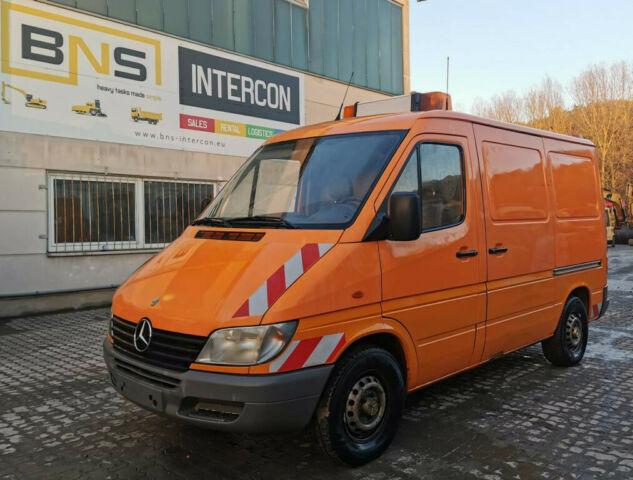
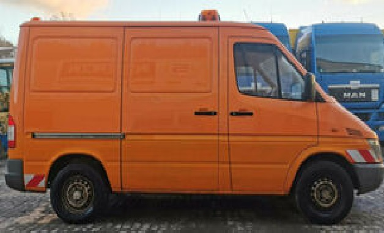

Proyecto A3
Proyecto A3Descripción del Proyecto
Este proyecto desarrollado por cuatro estudiantes de Ingeniería Mecatrónica de la Universidad Nacional de Colombia sede Bogotá hace parte de las actividades a desarrollar en la asignatura de Robótica ofertada por el Departamento de Ingeniería Mecánica y Mecatrónica de la universidad. Tiene como objetivo aplicar las herramientas de diseño de celdas robotizadas estudiadas en el curso utilizando la aplicación RobotStudio. A partir de este software se pretende construir un diseño de celda robótica que realice por simulación la tarea de automatización correspondiente al ensamble de los vidrios posteriores de una van Mercedes-Benz presentado en el video "Grenzebach | Automatic Front, Side and Rear Glass Decking at Sprinter Assembly Line"


Especificaciones
- Modelo del vehiculo
- - Mercedes-Benz Sprinter 316 CDi
- Operaciones
- - Tomar los vidrios del conveyor
- - Aplicación de primer (potenciador de adhesión)
- - Ubicar los vidrios en la secuencia
- - Tomar los vidrios
- - Ubicar los vidrios en la mesa de alineación
- - Tomar los vidrios
- - Aplicar el adhesivo
- - Ensamble a la van
- Tipo de vidrios
- - Vidrios posteriores térmicos templados
- Cantidad de vidrios
- - 2